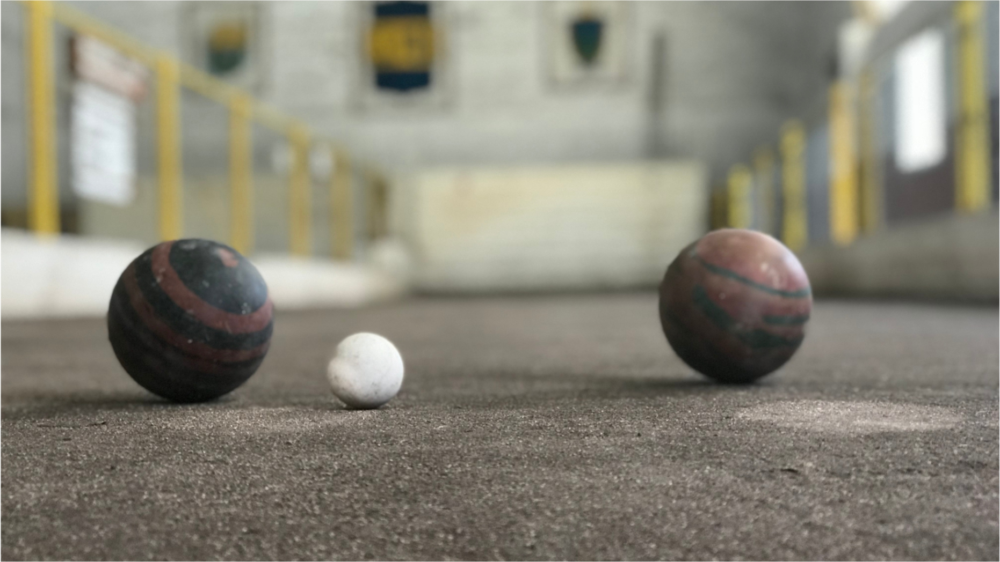

Nuestros Deportes

- 


Un poco de Historia
Lo que hicieron Esteban Baglietto, Alfredo Scarpatti, Santiago Sana y los hermanos Teodoro y Juan Antonio Farenga aquel 3 de abril de 1905 no fue muy distinto a lo que por entonces hacían otros grupos de amigos por el resto de la Argentina para canalizar un incontenible fervor popular por el fútbol.
Fundaban un club de fútbol. La particularidad del caso fue que, sin saberlo, estaban creando el más grande de la Argentina. Uno que se volvería pasión de multitudes y también un gigante mundial. Como la reunión en la casa de Baglietto fue interrumpida por inoportunas visitas, la ceremonia de fundación siguió al aire libre, en un banco de la Plaza Solís, y allí se fijó el nombre, tomado prestado del barrio, más ese Juniors que le daba un toque de prestigio inglés tan acorde con la época. Baglietto fue designado presidente. Y el 21 de abril de 1905, en el campo de juego de Independencia Sud, goleó 4-0 a Mariano Moreno en el primer partido de la historia. Un presagio de los tiempos por venir.
Los Colores del Alma
El Centro ya tenía nombre, un terreno donde jugar, un puñado de inmigrante italianos y Españoles que empujaban con pasión, pero le faltaba un color que lo identificara.
La indumentaria, por ese entonces, se resolvía como se podía y así fue como para los primeros partidos la hermana de los Farenga, Manuela, les cosió unos listones azules a una remeras blancas para que pudieran tener un juego de camisetas. La única condición era que no fueran rojas y blancas por... Alumni, el equipo de los primos que dominaba la época. El Centro también usó un modelo celeste, jugó durante algún tiempo con otro de finas rayitas azules hasta que adoptó definitivamente el azul y amarillo inspirado en los colores del Club Atletico Boca Juniors. Primero fueron azules con una banda amarilla pero, para evitar confusiones con la dirección de la tira dorada, finalmente en 1913 se optó por esa franja dorada que hoy cruza por el pecho el alma de cada hincha de Boca.